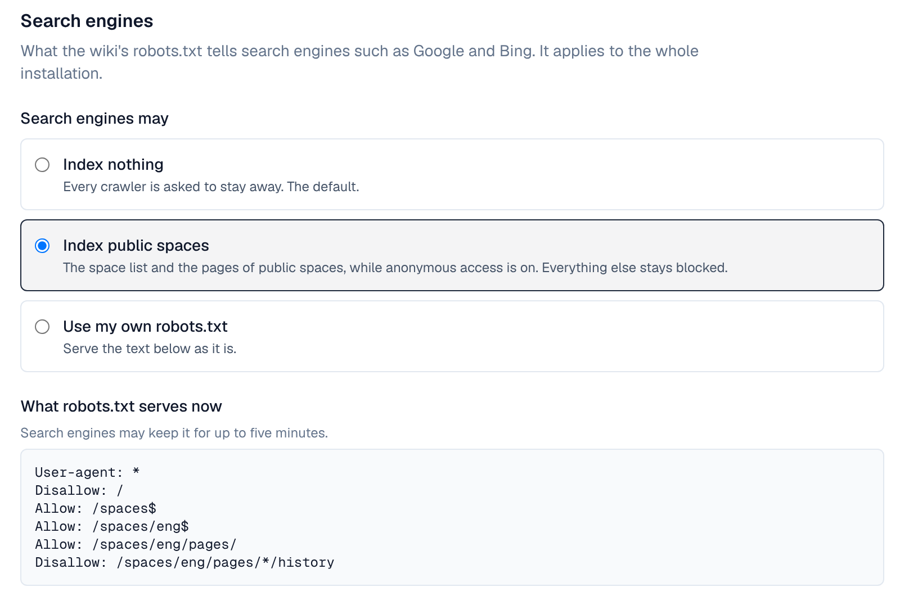

The Wiki serves /robots.txt, the file search engines read before crawling. Settings → Security → Search engines (settings:write) decides what it says, for the whole installation.

1. The choices
| Choice | robots.txt |
|---|---|
| Index nothing (the default) | Asks every crawler to stay away |
| Index public spaces | Allows the space list and the published pages of public spaces, and nothing else. Page history stays blocked. Blocks everything while anonymous access is off |
| Use my own robots.txt | Serves the text you enter, as it is (up to 16 KiB, no control characters). It is kept when you pick another choice |
What robots.txt serves now shows the saved result. After a change, each server takes up to a minute to serve it, and crawlers may keep the old file for up to five minutes more. If the server can't be reached, robots.txt answers 503 so crawlers try again later rather than reading a wrong answer.
2. Things to know
- robots.txt is a request, not access control: what crawlers can read is decided by anonymous access and each space's visibility.
- Index public spaces lists at most 1,000 public spaces; any beyond stay blocked.
- There is no sitemap yet.
- Changing the setting raises the robots.update event and is audited.